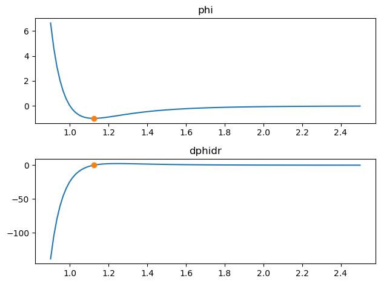
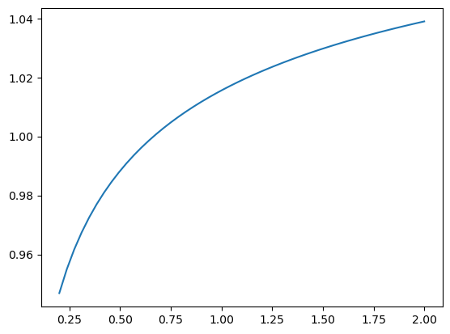
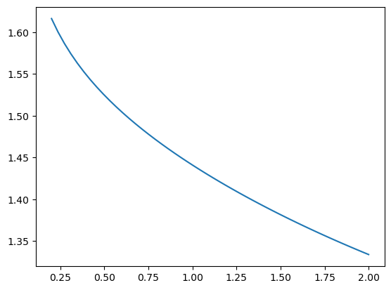
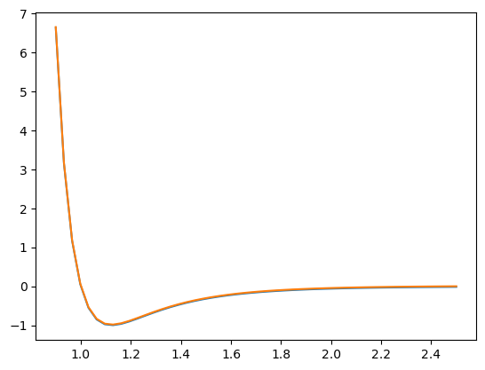

You can view this notebook on Github.
Why analphipy
analphipy is a python package for common analysis on pair potentials. It’s features include
Simple interface for defining a pair potential
Methods to create ‘cut’, ‘linear force shifted’, and ‘table’ potentials
Calculation of common metrics, like the second virial coefficient, and Noro-Frenkel effective parameters
This package is used actively by the author, so new metrics and potentials will be added over time. If you have a suggestion, please let the author know!
Useful references
Please take a look at the following for a primer on the type of analysis provided in analphipy.
A simple example
Let’s take a look at the properties of a Lennard-Jones (LJ), which has a length scale \(\sigma\) and energy scale \(\epsilon\). It is typical to consider units of length in terms of \(\sigma\) and energy in terms of \(\epsilon\), which is the same as setting \(\sigma=1\) and \(\epsilon=1\). We create a LJ potential object using the following:
[1]:
import analphipy
p = analphipy.Phi_lj(sig=1., eps=1.)
[2]:
p.r_min
[2]:
1.122462048309373
This defines an LJ potential. This contains things like the potential energy function p.phi, the derivative function p.dphidr, the location of the minimum in the potential p.r_min, and the value at the minimum p.phi_min. For example:
[3]:
%matplotlib inline
import matplotlib.pyplot as plt
import numpy as np
r = np.linspace(0.9, 2.5, 100)
fig, axes = plt.subplots(2)
axes[0].set_title('phi')
axes[0].plot(r, p.phi(r))
axes[0].plot(p.r_min, p.phi_min, marker='o')
axes[1].set_title('dphidr')
axes[1].plot(r, p.dphidr(r))
axes[1].plot(p.r_min, p.dphidr(p.r_min), marker='o')
fig.tight_layout()

A common question is, is the pair potential of interest like some other, perhaps simpler, potential? For example, Can given potential be mapped to some ‘effective’ hard-sphere or square-well potential? There is a deep history to this question. In brief, what is commonly done (and what analphipy is designed to do) is
Determine an effective (temperature dependent) hard-sphere diameter
Determine an effective square-well well depth
Determine an effective square-well attractive range.
Please look at the above references for further information. To perform the analysis on our LJ potential, we first need to create a NoroFrenkelPair object. This is conveniently done with the following method.
[4]:
nf = p.to_nf()
Now, the object nf can be used to calculate effective metrics. For example, to calculate the effective hard-sphere diameter at an inverse temperature \(\beta = 1/(k_{\rm B} T)\), where \(k_{\rm B}\) is Boltzmann’s constant, use the following:
[5]:
nf.sig(beta=1.0)
[5]:
1.0156054202252172
[6]:
betas = np.linspace(0.2, 2.0)
plt.plot(betas, [nf.sig(beta) for beta in betas])
[6]:
[<matplotlib.lines.Line2D at 0x10a569190>]

Likewise, the effective attractive range lambda can be found using
[7]:
plt.plot(betas, [nf.lam(beta) for beta in betas])
[7]:
[<matplotlib.lines.Line2D at 0x10a5ccc10>]

Since it is common want to calculate such metrics over a spectrum of values of \(\beta\), there is a utility method table. This creates a dictionary of results, which can be easily converted to a pandas DataFrame
[8]:
# create a dictionary of values
betas = np.linspace(0.2, 2., 4)
table = nf.table(betas=betas, props=['sig','eps','lam'])
table
[8]:
{'beta': array([0.2, 0.8, 1.4, 2. ]),
'sig': [0.9468474615554747,
1.0072387682627164,
1.0274539879239069,
1.0389955732798468],
'eps': [-1.0, -1.0, -1.0, -1.0],
'lam': [1.6162246932413373,
1.4699861479698415,
1.3923506242906025,
1.333901317192492]}
[9]:
import pandas as pd
pd.DataFrame(table)
[9]:
| beta | sig | eps | lam | |
|---|---|---|---|---|
| 0 | 0.2 | 0.946847 | -1.0 | 1.616225 |
| 1 | 0.8 | 1.007239 | -1.0 | 1.469986 |
| 2 | 1.4 | 1.027454 | -1.0 | 1.392351 |
| 3 | 2.0 | 1.038996 | -1.0 | 1.333901 |
There are several more metrics, and potential energy functions included with analphipy. Please look at the api reference for further information!
Defining your own potential
If you’d like to define your own potential energy function, there are two routes. The easiest is the define a callable potential energy function, and use PhiGeneric. For example, you can create a LJ potential using:
[10]:
def my_lj_func(r, sig, eps):
# function should always return an array
r = np.asarray(r)
x = (sig / r)
return 4. * eps * (x ** 12 - x ** 6)
# the passed function should only be a function of r, so use partial
from functools import partial
g = analphipy.PhiGeneric(phi_func=partial(my_lj_func, sig=1., eps=1.))
g
[10]:
PhiGeneric(r_min=None, phi_min=None, segments=None, phi_func=functools.partial(<function my_lj_func at 0x10c1dc3a0>, sig=1.0, eps=1.0), dphidr_func=None)
[11]:
r = np.linspace(0.5, 2.5, 5)
g.phi(r) - p.phi(r)
[11]:
array([ 0.00000000e+00, 0.00000000e+00, 5.55111512e-17, 0.00000000e+00,
-3.46944695e-18])
Note that additional info is not required, but you can explicitly pass it if so desired. For example, include a form for \(d\phi(r)/dr\)
[12]:
def my_lj_deriv_func(r, sig, eps):
r = np.asarray(r)
x = (sig / r)
return -48 * eps * (x**12 - 0.5 * x**6) / r
sig = 1.
eps = 1.
g = analphipy.PhiGeneric(
phi_func=partial(my_lj_func, sig=sig, eps=eps),
dphidr_func=partial(my_lj_deriv_func, sig=1., eps=1.),
# infinte integration bounds
segments=[0.0, np.inf]
)
[13]:
g.dphidr(r) - p.dphidr(r)
[13]:
array([ 0.00000000e+00, 0.00000000e+00, -2.22044605e-16, 0.00000000e+00,
0.00000000e+00])
Note that to investigate the Noro-Frenkel metrics, the values of r_min and segments must be set. The latter is the integration bounds including any discontinuities. This was done analytically in Phi_lj, but is not set in PhiGeneric. You can pass a value directly during the creation, or set the value numerically. For example, we could use:
[14]:
# this will raise an error because we don't have a minimum
g.to_nf()
---------------------------------------------------------------------------
ValueError Traceback (most recent call last)
Cell In [14], line 2
1 # this will raise an error because we don't have a minimum
----> 2 g.to_nf()
File ~/Documents/python/projects/analphipy/analphipy/potentials_base.py:283, in _PhiBase.to_nf(self, **kws)
268 """
269 Create a :class:`analphipy.NoroFrenkelPair` object.
270
(...)
280
281 """
282 if self.r_min is None:
--> 283 raise ValueError("must set `self.r_min` to use NoroFrenkel")
285 for k in ["phi", "segments", "r_min", "phi_min"]:
286 if k not in kws:
ValueError: must set `self.r_min` to use NoroFrenkel
[15]:
# instead set the minimum numerically with the following
g_with_min = g.assign_min_numeric(
r0=1.0, # guess for location of minimum
bounds = [0.5, 1.5], # bounds for search
)
[16]:
g_with_min.to_nf().lam(beta=1.5)
[16]:
1.3815918477142934
[17]:
p.to_nf().lam(beta=1.5)
[17]:
1.3815918477142932
Cut potential
analphipy provides a simple means to ‘cut’ the potential. To perform a simple cut, use the following:
[18]:
p_cut = p.cut(2.5)
[19]:
p_cut.phi(2.5)
[19]:
array(0.)
[20]:
p.phi(2.5)
[20]:
-0.016316891136000003
[21]:
r = np.linspace(0.9, 2.5)
plt.plot(r, p.phi(r))
plt.plot(r, p_cut.phi(r))
[21]:
[<matplotlib.lines.Line2D at 0x10dc4bfd0>]

To perform a cut with linear force shift, use the following:
[22]:
p_lfs = p.lfs(rcut=2.5)
[23]:
p_lfs.phi(2.5)
[23]:
array(0.)
[24]:
p_lfs.dphidr(2.5)
[24]:
array(0.)
[25]:
p_cut.dphidr(2.5)
[25]:
array(0.03899948)
[26]:
p.dphidr(2.5)
[26]:
0.03899947745280001
Note that to use the lfs method, dphidr of the class must be specified.
Please take a look at the api documentation for more information!